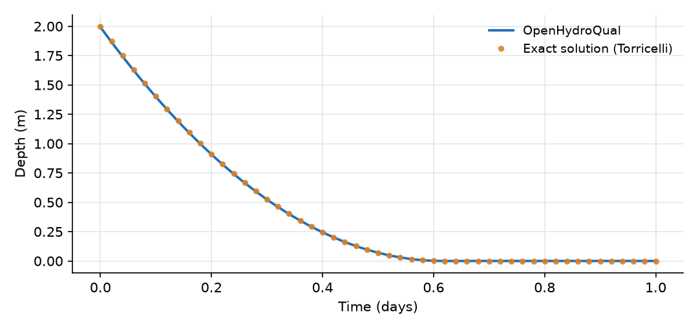
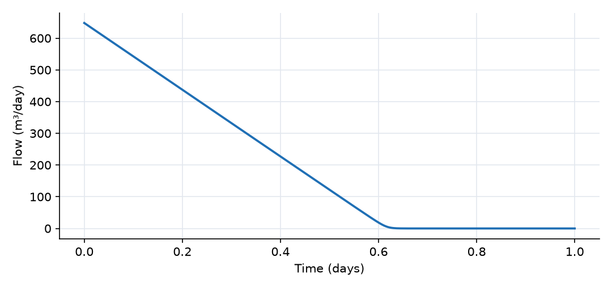

What this model represents
A tank of water draining through a small opening in its floor: a water storage tank being emptied, a detention basin with a bottom outlet, or the classic laboratory experiment used to introduce Torricelli's law. It is the simplest model in which the outflow depends on the state of the system. As the tank empties, the head over the orifice falls, so the outflow slows down.
Because this problem has an exact solution, the example also shows how to check a model against theory.
How it works
The tank. The Tank is a Pond block. A Pond relates stored volume S (m³) to water depth d (m) through a rating curve S = α·d^β. With β = 1 the walls are vertical and α is the plan area A, so this Pond is a prismatic tank with A = 100 m². OpenHydroQual evaluates the depth as
d = [S² / (α·(S + 0.1))]^(1/β)
The 0.1 m³ term keeps the expression smooth as the tank empties. For S much larger than 0.1 m³ it reduces to d = S / A. The water balance is
dS/dt = −Q
since the precipitation, evapotranspiration and inflow inputs of the Pond are left empty.
The orifice. The Orifice link computes
Q = 86400 · C_d · a · √(19.6 · (h_tank − h_outlet))
where C_d = 0.6 is the discharge coefficient (called head_loss_coefficient in the plugin), a = 0.002 m² is the orifice area, 19.6 m/s² approximates 2g, and the heads are measured in metres. The factor 86400 converts m³/s to m³/day. The tank head is d plus the floor elevation (0 m), and the Outlet is a fixed_head boundary at 0 m, so the driving head is simply the water depth d. If the outlet head were higher than the tank level, the flow would be set to zero (it cannot reverse through this link).
Exact solution. Combining the two relations gives
dd/dt = −(86400 · C_d · a · √19.6 / A) · √d
which integrates to
√d(t) = √d₀ − c·t, with c = 86400 · C_d · a · √19.6 / (2A) = 2.295 m^0.5/day
The tank empties at T = √d₀ / c = 0.616 days (14.8 hours). The file analytical_depth.csv tabulates d(t) from this formula every 0.02 days.
Time stepping. The run uses a fixed time step of 0.001 days (about 1.4 minutes), set by initial_time_step with max_timestep_increase_factor = 1, so that the comparison with the exact solution is not blurred by the time discretization.
What to look for in the results
- Agreement with theory. The computed depth follows the exact parabola to within about 0.01 m. Half of the depth (1 m) is lost in the first 0.18 days, but the remaining metre takes another 0.44 days, because the outflow weakens as the head falls.
- Linear decline of the outflow. Since Q ∝ √d and √d falls linearly in time, the outflow falls on a straight line, from about 650 m³/day at the start to zero at 0.62 days. Compare this with a linear reservoir (Q ∝ S), whose outflow decays exponentially and never quite reaches zero.
- A finite emptying time. A tank draining through an orifice empties completely in finite time, and the last few centimetres drain at a finite rate. Near the end the model departs slightly from the exact solution because of the smoothing term in the depth formula, which matters only when less than a few cubic metres (a few centimetres of depth) remain.
- Mass balance. The volume lost by the tank equals the time integral of the orifice flow. The Outlet's storage stays at 100,000 m³ because a fixed-head boundary is held constant.
Assumptions and limitations
- The tank has vertical walls. A tapered tank, a pond with sloping sides or a natural basin would use β > 1, and the exact solution above would no longer apply.
- The orifice discharge coefficient is constant. Real orifices show some dependence of C_d on head and Reynolds number, and very low heads are affected by surface tension and vortex formation.
- The outlet discharges freely. A submerged outlet would need a time-varying downstream head.
- The tank is assumed to be well mixed and at rest: velocity head in the tank, wall friction and sloshing are ignored.
Model diagram
Hover a block or link to see its name and type. Arrows show the positive flow direction.
Components
Click a component to see every property set in the model file, with units and meaning.
Blocks 2
Storage compartments: each holds water (and dissolved or particulate mass) and has a state that evolves in time.
TankPond · Pond_PluginA cylindrical or rectangular tank with a plan area of 100 m² (for example a cylinder 11.3 m in diameter), initially holding 200 m³ (2 m of water). Its floor is at elevation 0 m.
Pond: Stormwater pond
| Property | Value | Unit | Meaning |
|---|---|---|---|
| Initial Storage | 200 | m3 | Initial volume of water stored in the pond at the beginning of the simulation. |
| The coefficient (α) in the rating curve S = α d^β | 100 | The coefficient (α) in the pond volume-depth relationship: Storage = alpha * depth^beta. | |
| Alpha multiplier - This number is multiplied by alpha parameter (for calibration of multiple ponds) | 1 | The coefficient (α) in the pond volume-depth relationship: Storage = alpha * depth^beta. | |
| The exponent (β) in the rating curve S = α d^β | 1 | The exponent (β) in the pond volume-depth relationship: Storage = alpha * depth^beta. | |
| Bottom elevation of pond | 0 | m |
Outletfixed_headThe free discharge point below the orifice. A fixed-head boundary at 0 m, the same elevation as the tank floor, so the driving head is the full water depth in the tank.
fixed_head: Fixed-head boundary
| Property | Value | Unit | Meaning |
|---|---|---|---|
| Initial Storage | 100000 | m3 | |
| Head | 0 | m |
Links 1
Connections that move water (and the mass it carries) between blocks.
Orificeorifice · Pond_PluginA sharp-edged opening in the tank floor with an area of 0.002 m² (about 5 cm in diameter) and a discharge coefficient of 0.6. Flow is always from Tank to Outlet.
orifice: Orifice
| Property | Value | Unit | Meaning |
|---|---|---|---|
| Head-loss coefficient | 0.6 | ||
| orifice_area | 0.002 | m2 |
Input files
analytical_depth.csv |
Simulation settings
| Start time | 0 |
| End time | 1 |
| Initial time step | 0.001 |
| Write interval (steps) | 10 |
Results
Produced by running the downloaded model unchanged.

